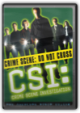
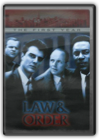
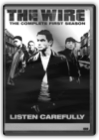

|
Planet Earth-complete Collection
Star Wars Trilogy
Disc 2: *The Empire Strikes Back V *Feature Film: The Empire Strikes Back V *Commentary by George Lucas, Irvin Kershner, Lawrence Kasdan, Ben Burtt, Dennis Muren, and Carrie Fisher Disc 3: *Return of the Jedi VI *Feature Film: Return of the Jedi VI *Commentary by George Lucas, Lawrence Kasdan, Ben Burtt, Dennis Muren, and Carrie Fisher Disc 4: *Bonus Disc includes the most comprehensive feature-length documentary ever produced on the Star Wars saga *Never-before-seen footage from the making of all three films, and much more CSI: Crime Scene Investigation - The Complete First Season

Danny Cannon, Kenneth Fink, Lou Antonio, Michael Shapiro, Michael W. Watkins
Based on real life Las Vegas crime scene investigators, CSI: CRIME SCENE INVESTIGATION follows the team as they solve chilling cases with innovative thinking and methodical scientific inquiry. Tackling cases peppered with grisly details, the Las Vegas PD Criminalistics Division is the #2 crime lab in the U.S., solving crimes that practically every other crime lab has given up on. Set in a town whose reputation for providing instant success for those willing to try their luck, CSI finds that the constant influx of visitors to the city that never sleeps also provides ripe targets for criminals of all varieties. The show also stars Paul Guilfoyle as Capt. Jim Brass, Robert David Hall as Dr. David Robbins and Eric Szmanda as Greg Sanders.DVD Contents: Disc 1: Pilot, Cool Change; Crate and Burial; Pledging Mr. Johnson Disc 2: Friends and Lovers; Who Are You?; Blood Drops; Anonymous Disc 3: Unfriendly Skies; Sex, Lies and Larvae; I-15 Murders; Fahrenheit 932 Disc 4: Boom; To Halve and to Hold; Table Stakes; Too Tough to Die Disc 5: Face Lift; $35K O.B.O; Gentle, Gentle; Sounds of Silence Disc 6: Justice is Served; Evaluation Day; Strip Strangler Disk 6 of the DVD also includes the following special features: * Featurette: "CSI: People Lie...But The Evidence Never Does" * The Who's "Who Are You" Music Video * Character Profiles Law & Order: The Fourth Year
Law & Order: The First Year

Leslie Gaulin, Douglas Ibold, John Refoua
Arguably the most intelligently written, ingeniously plotted series in the long history of televised crime drama, Law & Order began with a bang in 1990. Part of the program's enduring appeal is its unique premise: police investigate an urban crime during the first half, and prosecutors work the resulting trial during the second half. Meet, for the first time, detective Mike Logan (Chris North), assistant district DA Ben Stone (Michael Moriarty), their colleagues, and the crooks who keep them busy. Over 17-1/4 hours on 6 DVDs.
The Wire: The Complete First Season

Clark Johnson
From David Simon, creator and co-writer of HBO's triple Emmy-winning mini-series The Corner, this unvarnished, highly realistic HBO series follows a single sprawling drug and murder investigation in Baltimore. Told from the point of view of both the police and their targets, the series captures a universe of subterfuge and surveillance, where easy distinctions between good and evil, and crime and punishment, are challenged at every turn.
Battlestar Galactica
Outnumbered and outarmed, Adama reluctantly concedes that the newly sworn-in President Laura Roslin (Mary McDonnell) is correct - this battle was lost before it had begun. With no choice but to flee, the ragtag fleet of survivors and humanity's only hope set out in search of the mythic 13th Colony of Kobol… a legendary planet known as Earth. |


My Library
Collection Total:
1320 Items
1320 Items
Last Updated:
Apr 14, 2013
Apr 14, 2013
 Made with Delicious Library
Made with Delicious Library